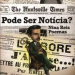
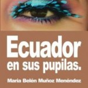
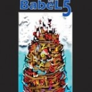

Proyecto Editorial presente en el FIPH-2014
[warning]jueves 29 maggio di 2014, di 3:00 A 5:00 PM
Presentazioni di libri. Librería Alma Mater (Infanta e San Lazaro, Centro Habana)[/warning]
Colección aBrace 2013-2014
 RÍOS DE CABEZAS
RÍOS DE CABEZASde Roberto Bianchi
Cercano a lo rasante, la poesía de Roberto Bianchi (Uruguay, 1940) comparece con temáticas de valorativas -extraordinarias-. Sus especulaciones se sobreponen a un realismo contenidista y por ende anecdótico. Bianchi se adhiere a una realidad densa, férrea, inconmovible, pero con prioridad hacia lo humano, abriéndose desde sus inicios hacia un abordaje que recae en las reminiscencias cotidianas. Sus desemboques giran alrededor de una rebeldía que esplende de disímiles maneras, y más que rebeldía, su fundamento queda cifrado en una suerte de desarraigo, de éxodos o de migraciones continuas, particularidad ésta que se preestablece o se multiplica en el recorrido de esta merecedora Antología personal: apertura o sinfonía de un Fausto que requiere de una meritoria valoración.
Ríos de Cabezas es precisamente homenaje, perentoria voluntad de amplificar una auténtica voz hispanoamericana. Intento, a pesar de la negativa del autor, compilar, y más que recopilar -proyectar esta cuantía- que dejará por sentada una obra de garantizada riqueza expresiva: obra de confiables valores ideoestéticos, de preeminencias idiomáticas que no sólo necesita legitimarse, sino que no puede, y no debe pasar inadvertida.
Presentatore: Miladis Hernández Acosta. Poeta, Guantanamo, Cuba.
Ríos de Cabezas es precisamente homenaje, perentoria voluntad de amplificar una auténtica voz hispanoamericana. Intento, a pesar de la negativa del autor, compilar, y más que recopilar -proyectar esta cuantía- que dejará por sentada una obra de garantizada riqueza expresiva: obra de confiables valores ideoestéticos, de preeminencias idiomáticas que no sólo necesita legitimarse, sino que no puede, y no debe pasar inadvertida.
Presentatore: Miladis Hernández Acosta. Poeta, Guantanamo, Cuba.

PODE SER NOTÍCIA?de Nina Reis
Pode ser notícia? ES, de la vasta obra de la brasilera Nina Reis, poeta, editora y gestora cultural residente en la actualidad en Uruguay, excelente trabajadora de la poesía escrita tanto en español como en portugués, la única que fue escrita y pensada poéticamente en este último idioma. Se trata de un compendio de textos referentes a sucesos que a criterio de la autora merecieron ser noticia, comentados y difundidos en el plano simbólico de imagen, la metáfora y el ritmo. Un poemario absolutamente rupturista que se aparta sustancialmente de sus textos escritos en español. De tal forma que incluso, que en el libro que comentamos, en lugar de las habituales palabras de contratapa, se encuentra un poema hecho canción en la música del uruguayo Leonardo Figuera:
Será noticia.
O homensegurou a chave /segurou a porta /segurou as lágrimas /mimetizou-se emagua /diluviou-se nos papéis /enroscou-se nacadeira /e tomouum café. /Retirou a máscara /avagou i filho no peito /fez rugir a fera /vestida de terno. /Contemplouse no espelho: /era ilha cercada de gente por todos os lados /Ele no sabía /que a vida às veces bate sem querer.
Será noticia.
O homensegurou a chave /segurou a porta /segurou as lágrimas /mimetizou-se emagua /diluviou-se nos papéis /enroscou-se nacadeira /e tomouum café. /Retirou a máscara /avagou i filho no peito /fez rugir a fera /vestida de terno. /Contemplouse no espelho: /era ilha cercada de gente por todos os lados /Ele no sabía /que a vida às veces bate sem querer.
 SUEÑOS DE PENITENCIA
SUEÑOS DE PENITENCIAde Jorge Bousoño
La palabra precisa, breve e intensa, eso encierra la poesía de Jorge Bousoño. Ello es necesario cuando el poeta -como en su caso- pretende mostrar lo esencial, lo sustante de la realidad. Sì, es la suya una poesía esencialista, en la que sentimiento y pensamiento se armonizan -todo un ejercicio ético acompañante y utilitario-; poesía en la que, insistentemente, concurren las voces internas, entre paréntesis, incorporadas como ese sujeto lírico secundario que contradice, reafirma, provoca. También le caracteriza los muy elocuentes espacios en blanco -aire- necesarios para que la imagen reverbere desde su alto vuelo creativo.
Miguel Florián. Poeta, crítico y catedrático de filosofía, Spagna.
Miguel Florián. Poeta, crítico y catedrático de filosofía, Spagna.

ECUADOR EN SUS PUPILASde María Belén Muñoz
En su prólogo dice la poeta brasilera Nina Reis, “Muñoz, poeta insobornable, traza un camino reconstruyendo mar, vida, sueño, muerte, familia, tiempo, esperanza, libertad y un país en sus pupilas: “Ecuador es él /cuando trae en sus labios la conquista de nacer”. Ella pretende, entre oras cosas, proponer una reflexión de las relaciones humanas, oleaje ancestral entre razas que pueblan La América Latina, cuna de tantas civilizaciones”. Es este el caso de una poeta joven de la que ha dicho en su Ecuador natal el gran poeta ecuatoriano Horacio Hidrovo Peña Herrera: “Al leer a María Belén Muñoz, recuerdo a Gabriela la grande, la que primero fue Premio Nobel y después Premio Nacional de Chile; es que pocos apuestan a la sencillez poética”.
ESPEJOS DE LA PALABRA. 15 ENCUENTROS ABRACE
compilación de roberto Bianchi y Nina Reis
Una cofradía de creadores de diferentes nacionalidades.
El Movimiento Cultural aBrace tiene como lema la solidaridad entre creadores, el desarrollo de escritores y la preservación cultural; y busca promover la cultura y el intercambio entre los escritores y el público en general.
A lo largo de estos años, en los Encuentros del Movimiento Cultural aBrace, procuramos como objetivo principal, además del papel de entretenimiento sumado al compromiso en el aspecto cultural, estimular el desenvolvimiento de la reflexión y el fomento a la lectura, originando un intercambio entre los escritores y artistas localizados en América Latina.
El logotipo recuerda el abrazo, como símbolo universal de la fraternidad.
Llegamos al cabalístico evento número 15, que desde remotos tiempos fue estipulado como el número que tiene la virtud de descubrir lo oculto y es sinónimo de inocencia, dulzura y juventud. Nada más significativo que conmemorar el décimo quinto encuentro de aBrace Cultura en Belo Horizonte, una ciudad que inspira sueños y, sobretodo, es dueña de un legado cultural indiscutible.
Brindemos y aprovechemos esta diversidad para estrechar los lazos de fraternidad y paz.
Nina Reis, Poeta, Brasile.
El Movimiento Cultural aBrace tiene como lema la solidaridad entre creadores, el desarrollo de escritores y la preservación cultural; y busca promover la cultura y el intercambio entre los escritores y el público en general.
A lo largo de estos años, en los Encuentros del Movimiento Cultural aBrace, procuramos como objetivo principal, además del papel de entretenimiento sumado al compromiso en el aspecto cultural, estimular el desenvolvimiento de la reflexión y el fomento a la lectura, originando un intercambio entre los escritores y artistas localizados en América Latina.
El logotipo recuerda el abrazo, como símbolo universal de la fraternidad.
Llegamos al cabalístico evento número 15, que desde remotos tiempos fue estipulado como el número que tiene la virtud de descubrir lo oculto y es sinónimo de inocencia, dulzura y juventud. Nada más significativo que conmemorar el décimo quinto encuentro de aBrace Cultura en Belo Horizonte, una ciudad que inspira sueños y, sobretodo, es dueña de un legado cultural indiscutible.
Brindemos y aprovechemos esta diversidad para estrechar los lazos de fraternidad y paz.
Nina Reis, Poeta, Brasile.

LETRAS DE BABEL 5Letras de Babel ES, por definición, un escándalo de voces diferentes. Por idioma, por estilos, expresiones insólitas, usuales o de rompimiento, desafiando -muchas de ellas- los equilibrios naturales.
Se encontrará aquí alguna mezcla idiomática, menos que en versiones anteriores y una categorización probablemente arbitraria que realiza esta vez aBrace en edición cooperada, clasificando a los autores en cuatro caprichosas categorías, que pudieron ser muchas más, pero también podrían ser menos.
Incorporamos a Poesía contemporánea la mayor cantidad de poetas expuestos, tanto por las formas como por los contenidos, ya que allí se encuentran expresiones poco convencionales y en gran variedad de formatos.
Continuamos con Poesía rupturista. En esta serie se produce una profundización de los anteriores. Son los que apelan a trastocar la lengua de sus significados naturales.
No puede en una muestra faltar la Poesía clásica, aportando métrica y rimas en sus diferentes variables.
Finalmente consideramos Poesía tradicional, aquella en que con formas libres se abordan temas habituales, manteniendo el lenguaje y las expresiones del habla cotidiana, textos que, seguramente, son los más populares y de mayor lectura.
Así se presenta esta quinta muestra que incorpora gran cantidad de autores nuevos, la mayoría desfilando en aBrace por primera vez, como forma de dar a conocer y difundir la poética actual a nivel internacional.
aBrace Editora.
Se encontrará aquí alguna mezcla idiomática, menos que en versiones anteriores y una categorización probablemente arbitraria que realiza esta vez aBrace en edición cooperada, clasificando a los autores en cuatro caprichosas categorías, que pudieron ser muchas más, pero también podrían ser menos.
Incorporamos a Poesía contemporánea la mayor cantidad de poetas expuestos, tanto por las formas como por los contenidos, ya que allí se encuentran expresiones poco convencionales y en gran variedad de formatos.
Continuamos con Poesía rupturista. En esta serie se produce una profundización de los anteriores. Son los que apelan a trastocar la lengua de sus significados naturales.
No puede en una muestra faltar la Poesía clásica, aportando métrica y rimas en sus diferentes variables.
Finalmente consideramos Poesía tradicional, aquella en que con formas libres se abordan temas habituales, manteniendo el lenguaje y las expresiones del habla cotidiana, textos que, seguramente, son los más populares y de mayor lectura.
Así se presenta esta quinta muestra que incorpora gran cantidad de autores nuevos, la mayoría desfilando en aBrace por primera vez, como forma de dar a conocer y difundir la poética actual a nivel internacional.
aBrace Editora.
 EL MARICÓN TRISTE
EL MARICÓN TRISTEde Ho Ki Che
El maricón triste, sin poder acceder por desconocimiento del idioma a la versión original, encontramos una categórica definición de sentimientos frente a la desaparición del ser querido, producto de un enamoramiento demencial. De ahí las manifestaciones tales como, te miraría entre rejas de espinas o siendo tu muerte yo/pongo tus pies cansados en mi seco lagrimal.Las frases son cortas y ríspidas, pareceríaque los versos son golpeados en lugar de serescritos y la filosofíaque se desprende de cadapalabra, genera en el lector unaagudasorpresa, Che cosa, en definitiva, es el máspuroelementodelpoema. La volatilidad de las expresiones y las definiciones como Ese árbol es mi tiempo, conjugan una especie de dicotomía transformando lo trascendente en flechas o dardos lanzados con asombrosa puntería. Podríamos establecer la diferencia de esta poética de marcada personalidad con las literaturas de occidente que encaran un personalismo autogestante y reseñas permanentes del hombre sin apoyo en la naturaleza. Con esa línea de trabajo Che se identifica con el inolvidable escritor inglés en un poema muy particular titulado: “De Oscar Wilde a Woo Ki Lim.” Ligeramente y sin disimulo de las opciones sexuales ya manifestadas desde el título, expresa:”Las nubes blancas están tan lejos /de sus sombras así, /mas la mía /está pegadita a mi cuerpo. Al fin /el secreto de la vida /se vuelve dolor..
Fundada y dirigida por el poeta uruguayo Roberto Bianchi, Abrace es uno de los proyectos editoriales más importantes para la literatura emergente de Nuestra América, al contribuir con energía y profesionalidad al nacimiento de un circuito alternativo de enorme riqueza, pluralidad y pujanza